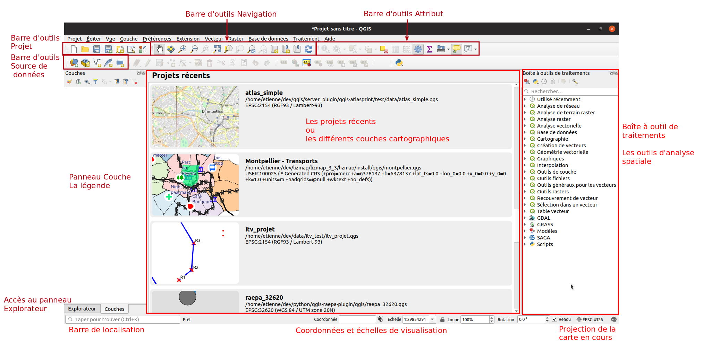

Gestion de la projection dans QGIS
Les couches et le projet
- Les couches (spatiales) ont chacune une projection.
- Dans les propriétés de la couche, onglet
Information. - Ou alors en passant la souris sur la couche pour faire afficher l'infobulle dans la légende.
- Dans les propriétés de la couche, onglet
- Le projet a lui aussi une projection.
- Il peut donc y avoir autant de projections que de couches plus celle du projet.
La projection du projet se trouve en bas à droite :

Les projections courantes
Ceci est vrai en France métropolitaine :
- EPSG:4326, unité en degrée, mondiale
- EPSG:3857, dit Google Mercator, en mètre, mondiale
- EPSG:2154 identique à IGNF:LAMB93, en mètre
Reprojection d'une couche
Note : SCR : Système de Coordonnées de Référence
Pour faire une reprojection de couche, ne jamais modifier le SCR dans les propriétés de la couche, onglet Source.
Ceci ne reprojettera pas les données dans une autre projection. Ceci redéfinira uniquement la projection i.e.
ceci indiquera de façon erronée au jeu de données qu'il s'agit d'un autre SCR.
Ainsi, n'utilisez cette manipulation que pour corriger un jeu de données dont la projection est fausse.
Pour faire une reprojection, faire un clic droit sur la couche puis aller dans le menu Exporter. Suivant si vous
avez une sélection ou non, choississez la bonne option dans le menu. Ensuite, dans la nouvelle fenêtre,
vous aller pouvoir définir :
- le format de destination (Geopackage, Shapefile, CSV...)
- le chemin de destination. Attention, toujours utiliser les trois petits points lors de la saisie du nom de fichier !
- le SCR de destination.